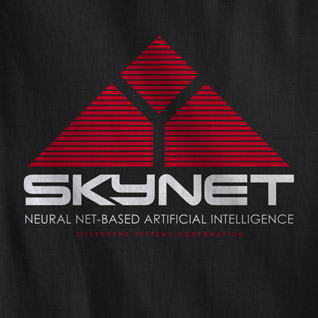

I’ve been doing a lot of reading and writing around context awareness the past couple of months – so much so that I changed the subtitle of this site to include it. It’s safe to say that the notion of this kind of awareness completely captured my imagination, or at the very least, led me to line up a whole stack of journal articles and books on the topic.
With the plethora of location-based applications appearing on various mobile platforms, the ubiquitous nature of geo-tagged data and the popular medias seemingly undying thirst for the latest tech-innovation, location enjoyed a pretty good ride in 2010. Starting at location as a focus of research (as I did), it’s not long before you realise that a coordinate is just one piece of metadata that can describe context, and it seems like a natural progression to begin thinking about broader notions of the term.
The next thing you realise after reading all about the current attempts at context-awareness is that, well, they suck fail to be all that useful.
There are many very intelligent systems-based frameworks for building an architecture of sensors that can detect where and what you’re doing, and very detailed examples of software implementations that aim to interpret this sensor-based data to assist their users. It’s not that these frameworks and implementations are poor or under-thought, it’s simply that the technology isn’t there yet, and our expectations are too high.

Great Expectations
This isn’t our fault though – the term “aware” is loaded with expectation. It immediately conjures notions of Asimov-type robots that basically act and understand as we do – of computational uber-humans superior to us in every way – and ones that we will either grow to love or fear completely.
The problem is hinted at above – in the interpretation. Whilst we might have sensors that can pinpoint you on a map, know who you’re with, whether you’re talking or not, walking or not, whether you’re standing, sitting, or lying down, the problem lies in the translation of this sensorial information into meaningful, and accurate interpretations for software to use.
The optimist and sci-fi fan in me thinks that, one day, we will see a convergence of sensor technology and artificial intelligence that will provide useful scenarios to people. You might argue this happens already – a pilot’s cockpit springs to mind. But the fact remains that the detection of meaningful, dynamic and social context is a long way off.
Context is socially constructed
I’m working on a longer article on this at the moment, so I won’t go into too much detail. It is worth noting however, that whilst the cockpit of a plane is a highly controlled environment where all variables are know, much of what we would define as context is socially constructed. That is, its existence is fleeting, and only arises out of interaction between people, objects and the environment.
Whilst we may be able to detect your location fairly accurately, the context to your presence there is very difficult to detect. Test this next time you’re in a cafe – note all the different activities that are taking place there. The animated conversations, the quiet reading, the anxious waiting, the scurrying (or bored?) staff. For each of these actors, the place holds a completely different meaning for them – and hence, a different context.
Context Sensitivity
So if we can’t rely on technology to sense and interpret that kind of context, then what can we do? Well, I’m not sure I have any answers to this, but I would suggest that we first lower the expectations of and burden on our technology. When compared to “awareness”, a word like “sensitivity” seems much more realistic. We can’t do Bicentennial Man just yet, but what we can do is make intelligent assumptions about when, where and how our technology might be used, and we can selectively use sensed data to inform the design of our applications.
That is, I believe it is the role of design to augment the technology – instead of relying on technology to give us context awareness, we should rely on design to give us context sensitivity.
{kind=link}
{kind=link}
{kind=link}
{kind=link}